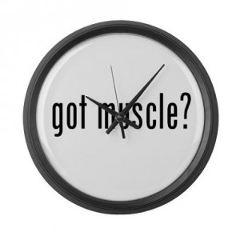

Mindset & Wellness
How to Make Happy Muscles In Your Spare Time

Everybody knows that getting older produces a weaker body and that proper exercise and stretching can counteract the negative effects of time on aging. We are all susceptible to the same media on the internet. Like Facebook and all of the other social networks millions of people use to send out ads to different niche markets every day showing them how to get the summer six pack or how to look "fit" (what a BROAD term people throw around). Sometimes I wonder how many of those ads are noticed, thought about each and every day, and are never clicked through to see what's on the other side. If you are one of those people, you've come to the right blog.
Just think about everything in your life that you are happy to spend your time doing. I imagine hanging out with friends, playing games, going to a nice lake or a beach somewhere warm, sitting on a mountainside absorbing the beauty of our natural world, OR watching a humpback whale jump its entire whale body above the surface of the ocean!! Could you imagine that strength?! Wow. That would surely make me happy to spend my time doing all of those things. However, I just couldn't imagine somebody not wanting to become stronger and more flexible so they can continue to lift themselves up in order to have that freedom as long as possible. On a personal level, it just makes sense to me to spend a lot of time taking care of my body. I just want to live well, you know?
I've gone through multiple sprained ankles from skateboarding, a torn medial collateral ligament in my knee (which was strong enough to hold up a 315lb squat for one rep prior to the football accident up to a 330lb squat for 12 reps about 2 years afterwards), upper-cross syndrome, lower-cross syndrome, plyca syndrome, partially torn biceps, self-diagnosed rhabdomyolysis (peeing brown is one of the scariest things that's ever happened to me), several pulled muscles and other minor injuries. All while stretching a very minimal amount. The first seven years out of my 10+ year exercise career included a big fat ZERO in the stretching column. I just didn't care about it as much as putting on some muscle and getting mentally and physically stronger. I vividly remember countless moments where I would read through the muscle magazines at the local gym and deliberately skip over the stretching sections because I didn't fully understand its superior importance for injury prevention and muscle performance. I think every single one of the injuries mentioned above were the result of my own selfish neglect.
So, I dealt with a lot of injuries, and now that I've implemented a stretching and foam rolling routine over the past couple years I feel 1000% better. I also get personal massages a couple times each month. I actually just got back from one this morning. It's almost as if I can feel every little muscle fiber in my body now that it's been loosened up. I feel stronger, I feel taller, I have fixed my injuries, I look better, and I could run for miles. 'Tis a good day ladies and gentlemen. However, the routine doesn't just include what I do at the gym or in therapy either, it's ALL DAY LONG.
I have no issues bear hugging my knee in the middle of a deep conversation to feel a sweet glute stretch. I don't care where I am or what the occasion is, if my muscles are telling me how tight and achy they are, I have learned the hard way how beneficial it is to stretch them at those moments. Even if it feels awkward, I tell myself to stretch it because I believe in the human body and what it's capable of. While my oatmeal cooks in the microwave I spend that time doing a doorway stretch for my chest. While my coffee brews I foam roll all the way up and down my entire spine to loosen it up to get ready for the day. While I'm on the phone with Mom, I'll stand up and grab hold of my ankle so I can stretch my quads. It's only a matter of taking advantage of your time throughout the day.
Take it from a guy who has observed the effects of stretching and exercise on his body for 10 years with a bachelors degree in Kinesiology focusing on exercise and fitness. A tight muscle is an unhappy muscle. An unhappy muscle does not perform well under tight pressure. Don't you want your body to be happy too? Loosen up!